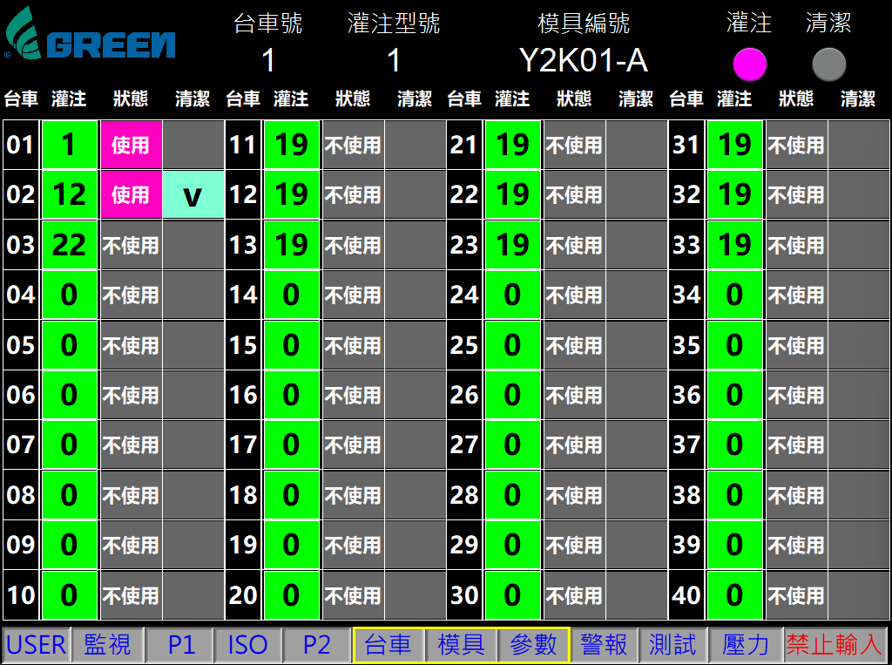
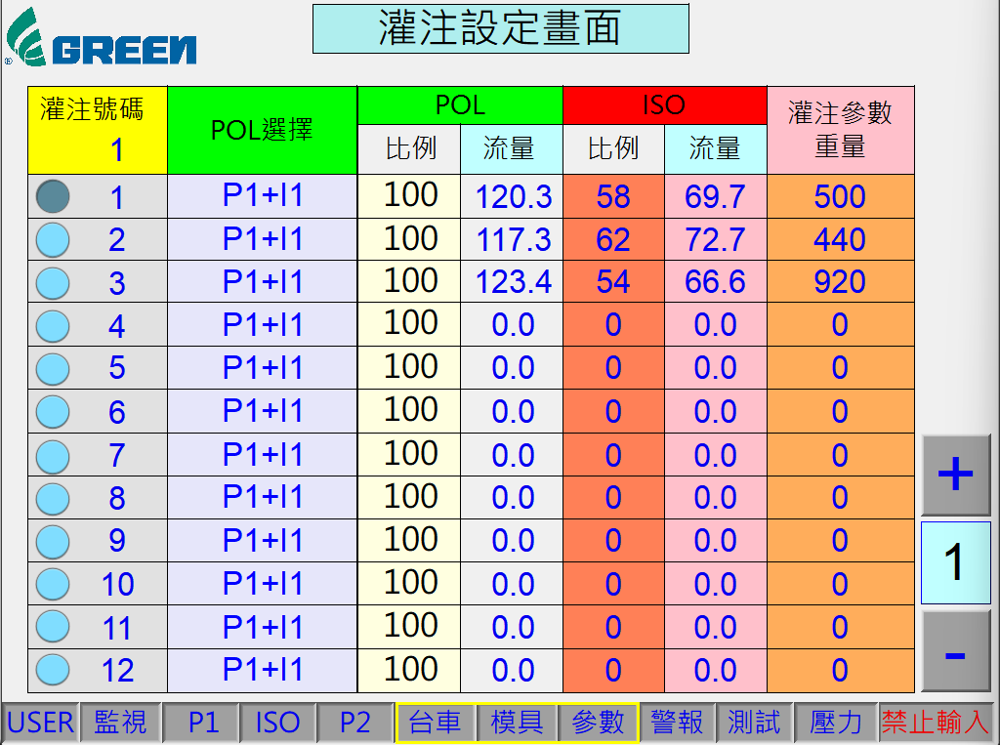
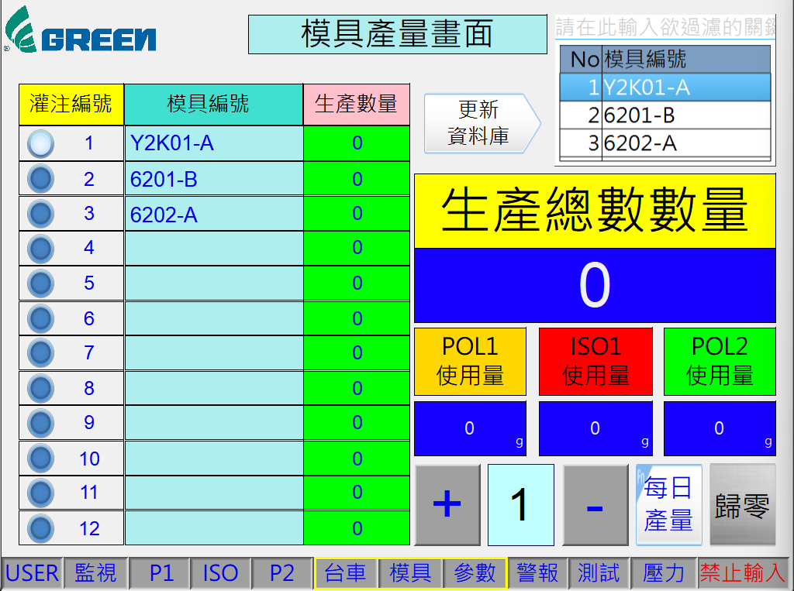

確保自動化生產線精準追蹤與配方自動切換技術
說明：系統首先透過不同技術（軟體/LS/編碼器）確認目前到達灌注站的是「幾號台車」。
系統整合說明：
無論是採用哪種方案，只要 PLC 能夠確認當前的「台車編號 (ID)」，都能無縫對應到下方的 HMI 系統，實現自動配方切換。
一旦系統確認了「台車編號 (ID)」，PLC 將與 HMI 設定畫面進行連動，自動執行以下邏輯以確保生產正確：

當系統辨識出目前是 ID:01 台車 時，會查閱此表。

PLC 根據上一步取得的 配方代碼 (1)，在此頁面讀取詳細參數。

灌注完成後，系統會連結模具編號與台車/配方。